OM 支持 IE7/8/9+、chrome、firefox 等主流浏览器。
- 1. 主页左边是集群列表，右边是集群实时监控信息
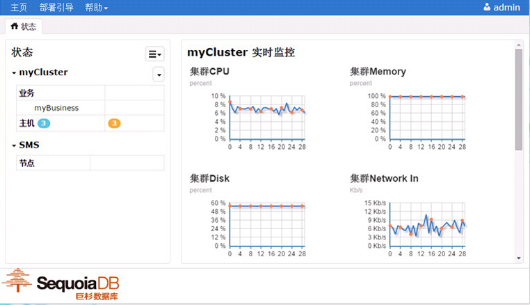
- 2. 创建集群
2.1 点击 <状态> 旁边的下拉菜单；
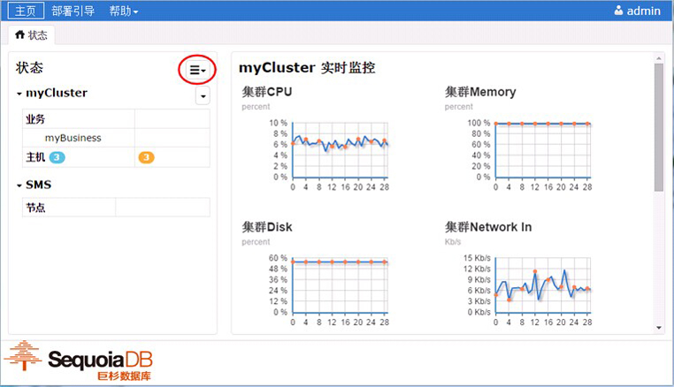
2.2 点击 <创建集群>；
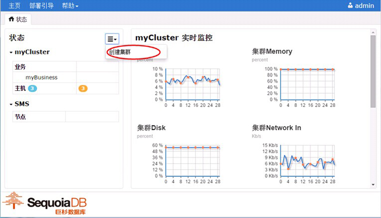
2.3 输入集群参数，点击 <高级选项> 可以设置更多参数；


2.4 点击 <确定>，完成创建。

- 3. 查看业务信息和删除业务
3.1 查看当前已安装的业务（图中 myBusiness 是已经安装的一个业务，myBusiness 是业务名）；
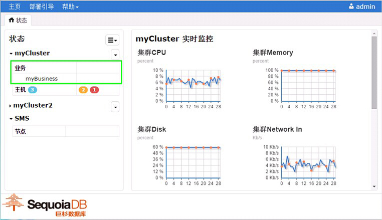
3.2 点击表格 <业务> 查看业务信息（一）；
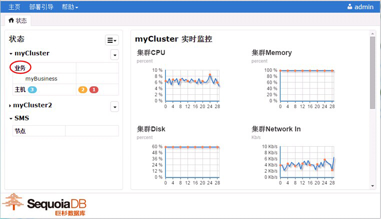

3.3 点击业务名旁边的下拉菜单，点击 <业务列表> 看业务信息（二）；


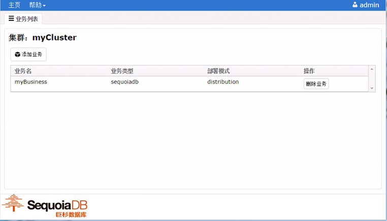
3.4 删除业务，在业务列表，点击业务对应的 <删除业务> 按钮，弹出警告窗口，点击 <确定> 开始删除业务，等待卸载完成，完成后弹出提示，点击 <返回>。
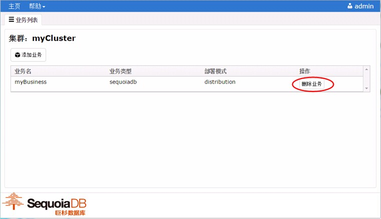
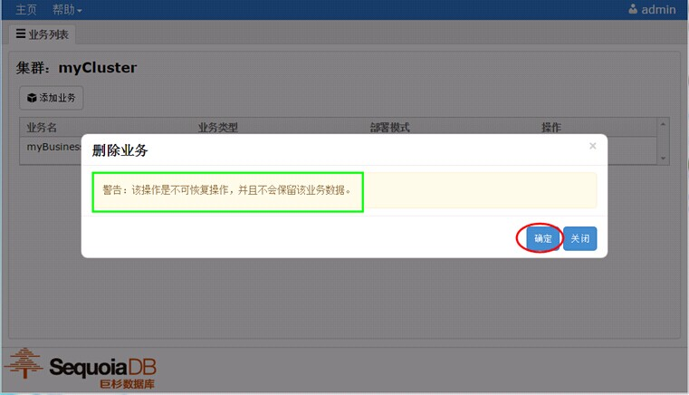


- 4. 查看集群主机数量和主机详细信息，删除主机
4.1 点击要查看的集群名；

4.2 鼠标移动到主机旁边蓝色的徽章，徽章上面的数字就是当前主机数量；

4.3 表格第二列是显示当前状态信息，黄色表示 warning，红色表示 danger；
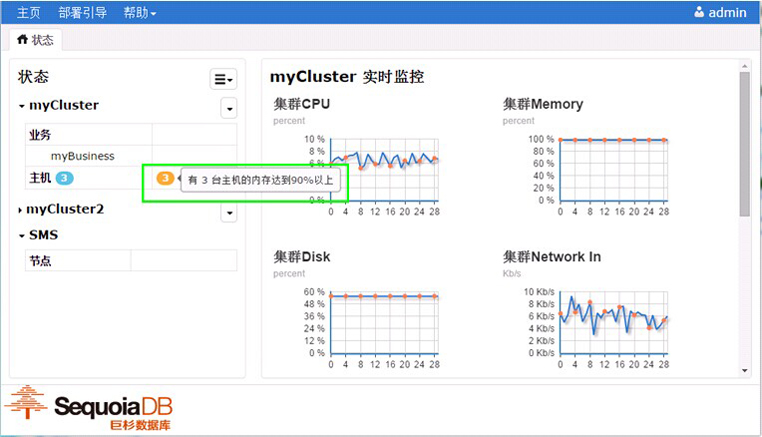

4.4 主页右边的 <实时监控>，监控集群的平均 CPU 使用率， 平均内存使用率， 平均磁盘使用率，网络入口流量，网络出口流量，网络每秒接收数据包个数，网络每秒发送数据包个数；
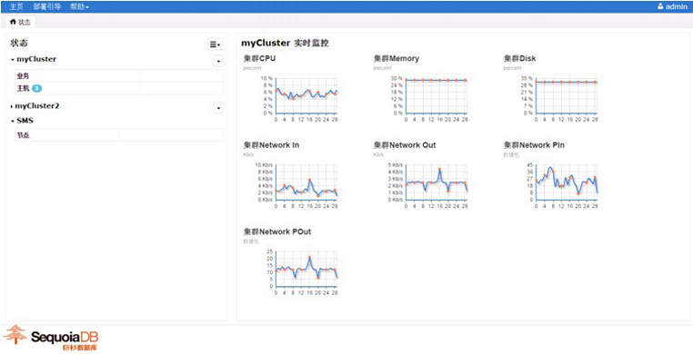
4.5 点击表格 <主机>，查看主机列表；
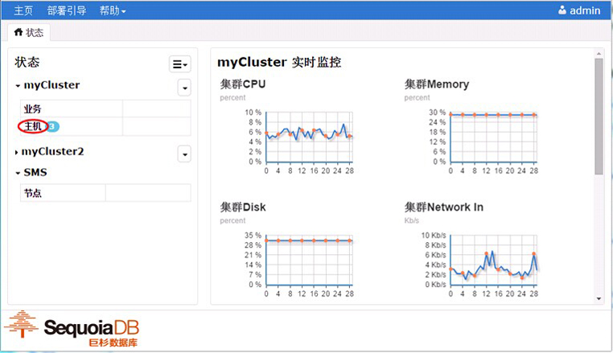
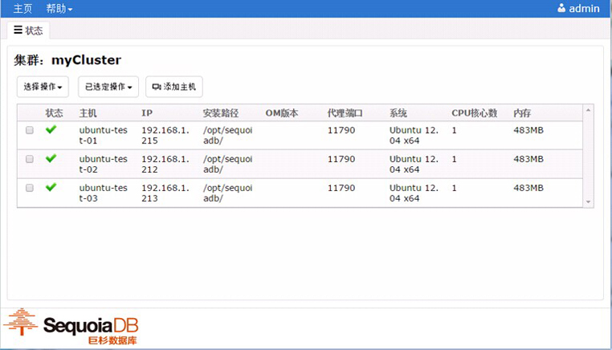
4.6 点击业务名旁边的下拉菜单，点击 <主机列表>查看主机列表；
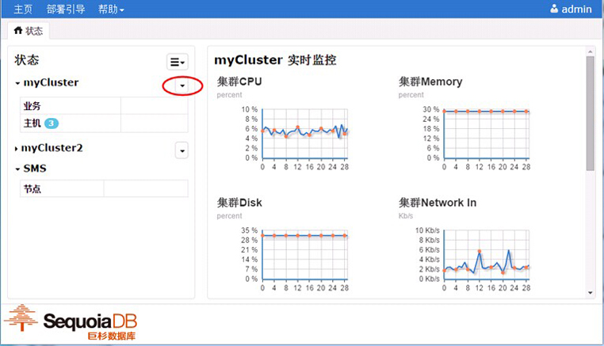
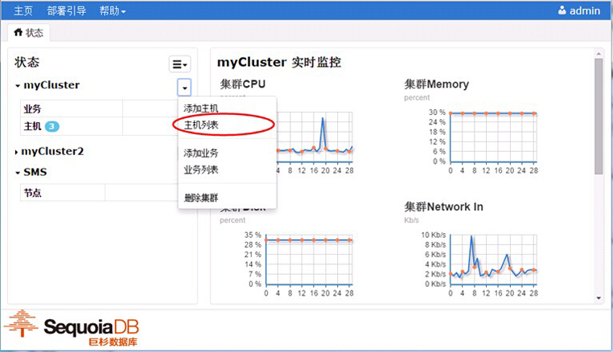

4.7 删除主机，选择要删除的主机，点击 <已选定操作>，点击 <删除主机>，弹出警告窗口，点击 <确定> 开始删除主机，等待完成，完成后弹出删除结果，点击 <关闭>。

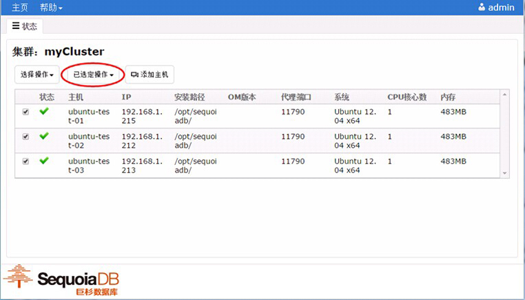

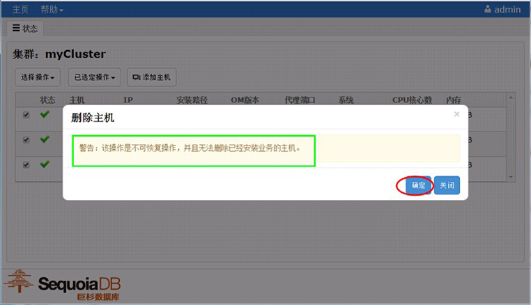
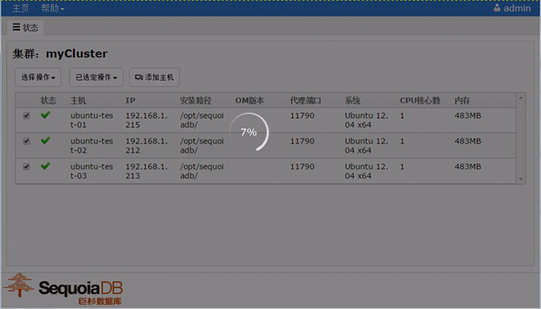

- 5. 删除集群
5.1 回到主页，点击要删除的集群旁边下拉菜单；
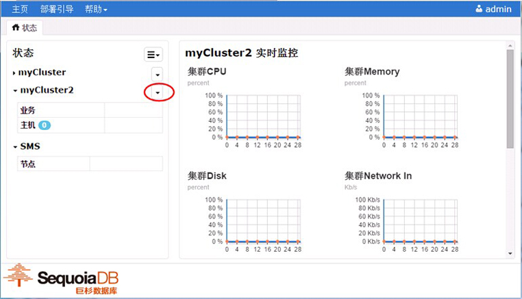
5.2 点击菜单的 <删除集群>；
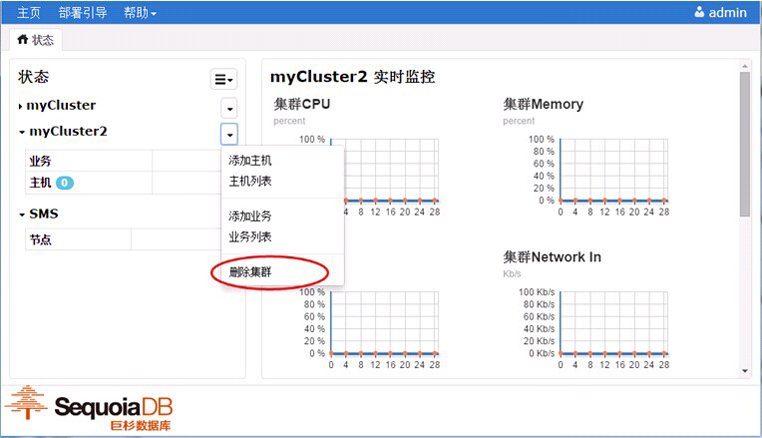
5.3 删除完成。
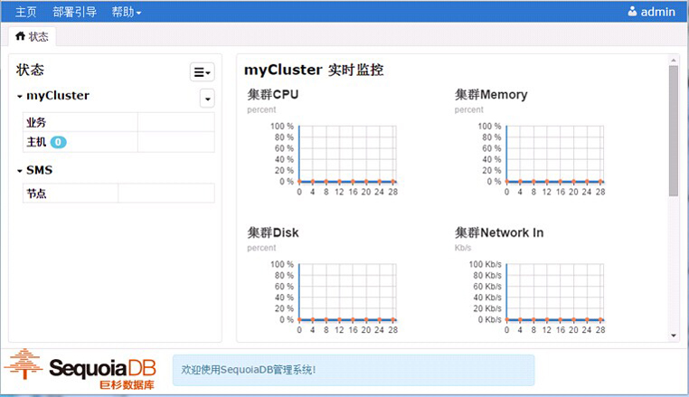